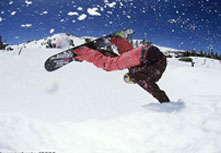

Snowboarding
Snowboarding is a sport that involves descending a snow-covered slope on a snowboard attached to a participant's feet using a special boot set into a mounted binding. The development of snowboarding was inspired by surfing and skateboarding. It was developed in the United States in the 1960s and the 1970s and became a Winter Olympic Sport in 1998.
The first modern snowboard, the Snurfer, was originally designed by Sherman Poppen for his children in 1965 in Muskegon, Michigan. Poppen’s Snurfer started to be manufactured as a toy the following year. It was essentially a skateboard without wheels, steered by a hand-held rope, and lacked bindings, but had provisions to cause footwear to adhere.
During the 1970s and 1980s as snowboarding became more popular, pioneers such as Dimitrije Milovich, Jake Burton Carpenter (founder of Burton Snowboards from Londonderry, Vermont), Tom Sims (founder of Sims Snowboards) and Mike Olson (GNU Snowboards) came up with new designs for boards and mechanisms that had slowly developed into the snowboards and other related equipment that we know today.
Initially, ski areas adopted the sport at a much slower pace than the winter sports public. For many years, there has been animosity between skiers and snowboarders, which lead to an ongoing skier vs snowboarder feud. Early snowboards were were banned from the slopes by park officials. In 1985, only seven percent of U.S. ski areas allowed snowboarding, with a similar proportion in Europe. In those early days, skiing was still very much an elitist sport. Seen as expensive, and catering largely to the more wealthy citizens, resorts weren’t about to let this new, dangerous craze into their exclusive runs. The young snowboarding crowd just didn’t fit the demographic that the resorts or their skiing customers wanted to see on their slopes.
Today, approximately 97% of all ski areas in North America and Europe allow snowboarding, and more than half have jumps, rails and half pipes. Twenty percent of all visitors to U.S. ski resorts are snowboarders, and more than 3.5 million people have taken up snowboarding worldwide.
Source:Wikipedia